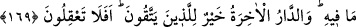
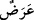

169. Onların ardından da (ayetleri tahrif karşılığında) şu değersiz dünya malını
alıp, nasıl olsa bağışlanacağız, diyerek Kitab’a vâris olan birtakım kötü kimseler
geldi. Onlara, ona benzer bir menfaat daha gelse onu da alırlar. Peki Kitap’ta Allah
hakkında gerçekten başka bir şey söylemeyeceklerine dair onlardan söz alınmamış
mıydı ve onlar Kitap’takini okumamışlar mıydı? Âhiret yurdu sakınanlar için daha
hayırlıdır. Hâla aklınız ermiyor mu?
“Onların” bahsedilen kimselerin “ardından, yerlerine geçip Kitâb’a” seleflerinden
Tevrat’a “vâris olan” onu okuyan ve içindekilere vâkıf olan “bir takım insanlar
geldi.” Onların ardından gelenler, Hz. Peygamber (s.a.v.)’in asrında bulunan, Allah’ın
gruplar halinde yeryüzüne dağıttığı yahudilerin ardından gelenlerdir. Önceki ayette
“Onlardan kimileri iyi kimselerdir, kimileri de öyle değil.” diye vasfedilenler de
bunlardır.
“Half” kelimesi, sıfat mânâsında kullanılan bir masdardır. Bu sebeble hem tekil, hem
de çoğul için kullanılabilir. Bir kimse diğerinin yerine geçtiği zaman kullanılır.
İbnu’l-Arâbî demiştir ki: “Halef”, iyi ve salih; “half” ise kötü demektir. Değersiz
söze “half” denilmesi de bundandır.
Muhammed b. Cerir de şöyle der: Övgü için genellikle “halef”, yermek içinse “half”
kullanılır. Fakat nadir de olsa bunun aksi söz konusu olur. Araplar, uzun müddet kapta
kalıp ekşiyen süte, “halfü’l-leben” derler. Sanıyorum ki, bu kelimenin yermek için
kullanılması buradan gelmektedir. Yine Araplar, oruçlunun değişip bozulan ağız
kokusuna da “half” derler. Şu halde yoldan çıkan insan, ona benzetilmiştir. Hâsılı her iki
kelime de hem hayır hem de şer için kullanılır. Fakat hayır mânâsında en çok
kullanılanı, “halef”tir. (Haddâdî Tefsîri’nde böyle geçmektedir.)
“Onlar şu alçak dünyânın malını alıyorlar.” Yani, değersiz dünya malına tamah edip
insanlar arasında hakemlik yaparken rüşvet alıyorlar ve dünya malı karşılığında
Allah’ın kelâmını tahrif ediyorlardı.
“Dünya” kelimesi, yakın mânâsına gelen “dünüvv” kelimesinden türetilmiştir. Yakın
ve acele oluşu sebebiyle, içinde yaşadığımız bu âleme ve bu hayata “dünya” denmiştir.
Veya “dünya” kelimesi, alçaklık mânâsını taşıyan “denâet” kökünden alınmıştır. Meselâ
bir adamın alçak ve hayırsız olduğunu ifade etmek üzere de bu kökten istifade edilir.
Haddâdî der ki: Sanki bir an gözüküp yok olan geçici bir şey olduğu için dünya
malına “” denilmiştir. Nitekim Ad kavmi, helâkleri için üzerlerine dikilen buluta
“Bu, bize yağmur yağdıracak (sonra kaybolup gidecek) bir buluttur.” (el-Ahkâf,